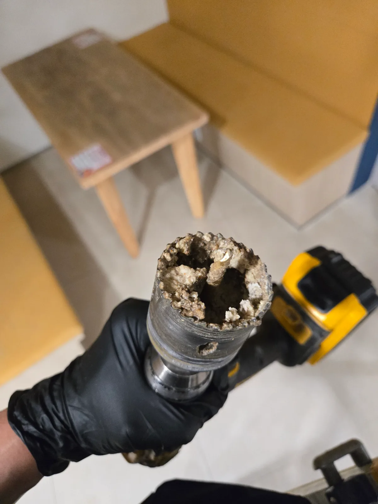
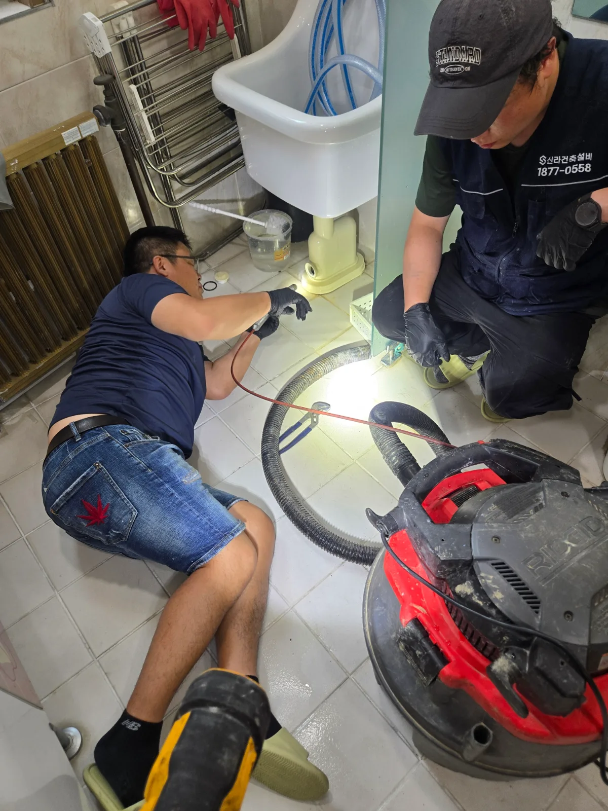

강남구 대치동 하수구막힘, 현장 도착 후 진단
강남구 대치동 어린이집에서 하수구가 심하게 막혔다는 요청을 접수한 신라건축설비는 주철배관 작업과 대량의 오염물 제거에 필요한 전문장비를 준비해 신속하게 현장으로 출동했습니다. 어린이집은 아이들이 생활하는 공간이기 때문에 배수 불량과 역류가 발생하면 위생 문제와 시설 운영 차질로 빠르게 이어질 수 있습니다. 숙련된 하수구막힘 전문 기술자들이 배수 상태와 배관 구조를 점검한 결과, 한 개의 배수구만 뚫어서는 해결하기 어려운 상황이었습니다.
실내 마감과 설비는 리모델링되어 새 건물처럼 보였지만 내부 하수관은 오래된 주철배관이 그대로 남아 있었습니다. 여러 배수 지점의 흐름이 동시에 좋지 않았고 배관 내부 저항도 구간마다 크게 나타났습니다. 신라건축설비는 눈앞의 물길만 일시적으로 확보하지 않고 기존 주철배관의 연결 방향을 따라 전체 막힘 범위를 확인하기로 했습니다.
1단계: 증상 확인과 필요한 장비 작업
먼저 각 배수구와 연결 배관의 흐름을 점검하며 막힘이 심한 구간과 장비를 투입할 위치를 선정했습니다. 작업 접근성이 제한된 곳에서는 기술자들이 바닥 가까이 몸을 낮춰 배관 방향과 구조를 세밀하게 확인했습니다. 기존 주철배관은 오래 사용하면서 내부 부식과 기름때 축적이 함께 진행될 수 있으므로 무리하게 장비를 밀어 넣지 않고 구간별 상태에 맞춰 작업 방향을 정했습니다.
막힘이 집중된 주철배관에는 홀쏘를 이용해 필요한 크기의 작업구를 타공했습니다. 그런데 배관에 구멍을 낸 직후 홀쏘 날 내부에 굳은 기름때가 가득 끼어 통째로 딸려 나왔습니다. 이는 배관 벽면에 기름이 조금 붙은 수준이 아니라 배관 내부 공간 자체가 오래된 기름 덩어리와 슬러지로 심하게 채워져 있었다는 직접적인 증거였습니다.

2단계: 원인 구간 처리와 정상 작동 확인
확보한 타공구를 통해 리지드 습식 석션기와 배관 작업 장비를 투입해 주철관 안쪽의 기름때와 오염물을 제거했습니다. 단단하게 굳은 부분은 분쇄해 잘게 만들고, 배관 안에 고인 오수와 떨어져 나온 슬러지는 석션으로 회수했습니다. 중앙에 작은 물길 하나만 뚫으면 주변에 남은 기름층이 다시 떨어져 단기간에 재막힘이 발생할 수 있어 배관 내부 단면을 최대한 확보하는 데 중점을 두었습니다.
이번 대치동 어린이집 하수구막힘은 한 지점만 작업하고 끝낼 수 있는 현장이 아니었습니다. 첫 번째 구간의 물길을 확보한 뒤 연결된 다른 배수시설을 다시 점검하고, 저항이 확인되는 구간마다 작업 위치를 옮겨가며 추가 관통과 오염물 제거를 반복했습니다. 사실상 주요 배수 구간 대부분을 순서대로 확인하면서 막힘이 남아 있는 곳을 하나씩 찾아 작업했습니다. 마지막에는 각 배수시설에서 충분한 양의 물을 흘려보내 구간별 배수 속도와 역류 여부를 확인했습니다.

작업 결과와 재발 방지 안내
홀쏘 타공과 석션·관통 작업을 병행하여 오래된 주철배관 여러 구간에 축적된 기름때와 슬러지를 제거한 결과, 배수시설의 물이 정체되지 않고 정상적으로 흐르는 것을 확인했습니다. 건물 내부가 새롭게 리모델링되었더라도 매립된 기존 하수배관까지 반드시 교체된 것은 아닙니다. 특히 오래된 주철관을 그대로 사용하는 건물은 내부 부식과 기름때 축적으로 유효 단면이 계속 좁아질 수 있습니다.
여러 배수구에서 동시에 물 빠짐이 느려지거나 반복적으로 막힌다면 개별 배수구만 뚫을 것이 아니라 메인 배수관과 연결 구간 전체를 점검해야 합니다. 어린이집·학교·병원·식당처럼 배수시설 사용량이 많은 곳은 정기적인 배관 점검과 세척으로 대규모 역류와 시설 운영 중단을 예방하는 것이 좋습니다.
신라건축설비는 강남구 대치동을 비롯한 서울 전 지역과 경기권에 신속하게 출동하여 어린이집·학교·관공서·상가의 하수구막힘과 공용배관막힘을 전문적으로 해결합니다. 단순 관통에 그치지 않고 배관 구조와 막힘 범위에 따라 내시경검사, 석션, 샤프트, 고압세척, 주철배관 타공과 보수공사를 복합적으로 적용합니다. 작은 생활 막힘부터 여러 구간이 동시에 막힌 대형 시설의 배관 진단과 공사까지 자체적으로 대응할 수 있습니다.
최종 조치: 오래된 주철배관의 구조와 연결 방향을 확인한 뒤 필요한 위치를 홀쏘로 부분 타공했습니다. 타공구를 통해 배관 안을 가득 채운 굳은 기름때와 슬러지를 석션 및 관통 작업으로 제거하고, 한 지점에서 끝내지 않고 연결된 배관의 주요 구간을 순차적으로 점검·작업했습니다. 작업 후 구간별 통수검사를 진행하고 타공 부위를 안전하게 마감했습니다.
현장 방문 전 확인하는 비용과 작업 범위
신라건축설비는 현장 증상과 배관 구조를 확인한 뒤 필요한 작업과 예상 비용을 안내합니다. 단순 관통으로 해결되는지, 배관내시경·석션·고압세척 또는 추가 장비가 필요한지는 현장 상태에 따라 달라집니다. 출장비와 야간 작업비, 추가 장비 비용이 발생할 수 있는 경우 작업 전에 먼저 설명하고 동의를 받은 범위에서 진행합니다.
업체를 선택할 때 확인할 사항
무조건적인 ‘0원’ 표현보다 실제 작업 범위, 추가 비용 조건, 사용 장비와 사후 대응 기준을 확인하는 것이 중요합니다. 해결되지 않았을 때의 비용 기준과 작업 후 동일 증상 발생 시 점검 범위를 사전에 문의해두면 불필요한 분쟁을 줄일 수 있습니다.
강남구 하수구막힘 자주 묻는 질문
여러 배수구가 동시에 역류하면 공용배관 문제인가요?
어린이집 내부의 여러 배수시설에서 물이 원활하게 빠지지 않고 배수 불량이 반복됐습니다. 한 지점만 일시적으로 막힌 증상이 아니라 서로 연결된 배관 곳곳의 흐름이 좋지 않아 시설 전체의 배수에 영향을 주는 상태였습니다.처럼 증상이 나타나더라도 원인은 현장마다 다를 수 있습니다. 장비와 배관 구조를 확인한 뒤 필요한 작업 범위를 안내합니다.
고압세척이 항상 필요한가요?
작업 전 증상과 현장 여건을 확인해 예상 범위와 비용을 먼저 안내합니다. 변기 탈거, 장비 추가 투입 또는 공용배관 작업이 필요한 경우 고객 동의 없이 임의로 진행하지 않습니다.
작업 전 추가 비용을 확인할 수 있나요?
완료 후 정상 작동을 함께 확인하고 작업 범위에 따른 사후 안내를 드립니다. 동일 증상이 반복되면 현장 기록을 기준으로 원인을 다시 점검합니다.
하수구막힘 서울·경기 출동지역
신라건축설비는 강남구 대치동 현장을 포함해 서울 25개 구와 경기도 31개 시·군의 배관 문제를 상담합니다. 현장 거리와 기사 배정 상황에 따라 출동 가능 여부를 먼저 안내드립니다.
서울 전 지역
강남구 · 강동구 · 강북구 · 강서구 · 관악구 · 광진구 · 구로구 · 금천구 · 노원구 · 도봉구 · 동대문구 · 동작구 · 마포구 · 서대문구 · 서초구 · 성동구 · 성북구 · 송파구 · 양천구 · 영등포구 · 용산구 · 은평구 · 종로구 · 중구 · 중랑구
경기도 주요 출동지역
수원시 · 용인시 · 고양시 · 화성시 · 성남시 · 부천시 · 남양주시 · 안산시 · 평택시 · 안양시 · 시흥시 · 파주시 · 김포시 · 의정부시 · 광주시 · 하남시 · 광명시 · 군포시 · 양주시 · 오산시 · 이천시 · 안성시 · 구리시 · 의왕시 · 포천시 · 양평군 · 여주시 · 동두천시 · 과천시 · 가평군 · 연천군